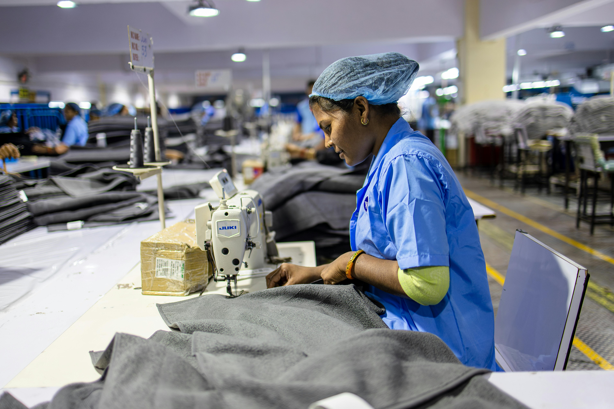

Bogotá Produce
El programa Bogotá Produce es una iniciativa de la Alcaldía de Bogotá, en alianza con Bancóldex y la Secretaría Distrital de Desarrollo Económico, diseñada para fortalecer y consolidar los micronegocios de la ciudad mediante acceso a financiación formal, formación empresarial y acompañamiento técnico.
¿Qué es Bogotá Produce?
Es una línea de crédito preferencial que ofrece hasta $20 millones de pesos por empresa, destinada a financiar:
- Capital de trabajo: adquisición de materias primas, insumos, pago de nómina y otros gastos operativos.
- Modernización: compra o arrendamiento de maquinaria, adecuaciones locativas y adquisición de activos fijos.
- Sustitución de pasivos: refinanciamiento de deudas existentes, excluyendo créditos con Bancóldex o pasivos con socios o accionistas.
Condiciones Financieras
- Monto máximo por empresa: hasta $20 millones de pesos.
- Plazo de pago: hasta 36 meses.
- Periodo de gracia: hasta 3 meses.
- Amortización: cuotas mensuales o trimestrales.
- Tasa de interés: preferencial, relacionada al IBR -0,7%
¿Quiénes pueden acceder?
- Micronegocios formales e informales con domicilio principal en Bogotá.
- Empresas con mínimo un año de funcionamiento.
- Personas naturales o jurídicas consideradas como microempresas, de todos los sectores económicos.
Requisitos para aplicar
- Tener un micronegocio en Bogotá con mínimo un año de funcionamiento.
- Inscribirse y completar el proceso de formación en el programa "Camino a la Inclusión Financiera de los Micronegocios en Bogotá D.C." a través de
- Obtener el certificado de participación al finalizar la formació
- Acercarse a las entidades financieras aliadas que tienen habilitada la línea y solicitar el crédito.
Enfoque de Inclusión
El programa tiene un enfoque especial en apoyar a:
- Mujeres microempresarias: se destinaron $67.200 millones exclusivamente para este grupo.
- Jóvenes emprendedores.
- Personas mayores de 50 años.
Este enfoque busca promover la inclusión financiera y el empoderamiento económico de poblaciones tradicionalmente subatendidas.
Impacto del Programa
Hasta febrero de 2025, el programa ha desembolsado cerca de $32.000 millones de pesos, beneficiando a 2.688 empresas en Bogotá. Además, se han realizado ruedas de financiamiento que han atendido a 263 empresarios, con un potencial de crédito estimado en $4.800 millones y un monto promedio de $20,6 millones por solicitud.